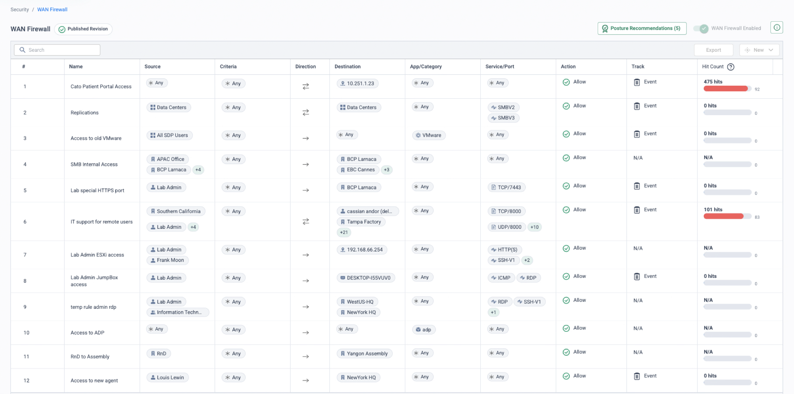
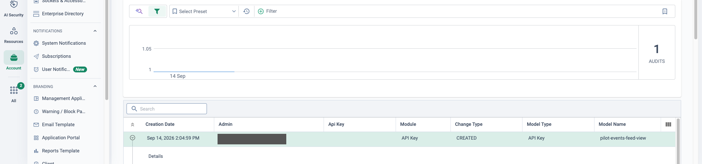

Why this matters
Networks grow faster than network teams. An acquisition adds twenty sites overnight; a retail rollout adds a hundred over a quarter. If every site, every firewall rule and every report is a sequence of clicks, scale means either more head-count or more mistakes — usually both.
The objective: make the network operable as code. New sites deploy from a template with zero console time, policy changes go through review and can be rolled back, and the security estate feeds the tooling the organisation already runs — SIEM, CI/CD, ITSM. Because the CMA itself is built on the same GraphQL API that customers use, there is no "automation subset": anything you can click, you can code.
Click-ops does not scale
Operating by hand
- Every new site is a manual, snowflake configuration
- Bulk policy changes mean hours of repetitive clicking
- No review step — a typo goes straight to production
- No rollback beyond "remember what it looked like"
- Reporting is a person exporting screenshots monthly
Operating as code
- Sites are templated resources — apply once, repeat forever
- Policy lives in Git: diff, peer review, merge, deploy
- Rollback is
git revertplus a pipeline run - Events stream continuously into the SIEM
- Reports generate and deliver themselves on a schedule
“Walk me through your last multi-site change — how long did it take, how many people touched a console, and if it had gone wrong, how would you have rolled it back?”
Where this sits in the Cato SASE platform
- Site and policy definitions live in Git; a CI runner executes Terraform and catocli on merge.
- The Cato GraphQL API, the same API the CMA runs on, applies the change with one audit entry per mutation.
- New sites reach the topology map within minutes; one tagged script changes policy at every site.
- The eventsFeed API streams security and connectivity events into the SIEM continuously.
One API, three ways to consume it
The Cato GraphQL API at api.catonetworks.com is the programmatic surface of
the entire platform — sites, sockets, policy, entities, events and analytics. Around it
sit two official tools, so teams can automate at whatever altitude suits them:
GraphQL API
Query and mutate anything in the account — the same API the CMA runs on. Ideal for SIEM feeds, custom integrations and scripted changes from any language.
catocli
The Python CLI that wraps the API — every query and mutation as a shell command. Perfect for ad-hoc lookups, quick bulk jobs and glue scripts in a pipeline.
Terraform provider
The official catonetworks/cato
provider: declare sites, interfaces and policy as resources. Plan shows the diff; apply
converges the account to the code.
What teams automate first
Zero-touch site rollout
Template a branch once, then apply it per site — the M&A play: an acquired estate becomes a Terraform module and lands on the WAN in days, not quarters.
Bulk policy with review & rollback
Firewall rules live in version control. A change is a pull request: diffed, reviewed, applied by pipeline — and reverted the same way if needed.
Events into the SIEM
The events feed streams security and connectivity events into Splunk, Sentinel or any collector — Cato telemetry alongside everything else the SOC watches.
Scheduled reporting
Pull analytics and entity data on a schedule and publish to whoever needs it — no more monthly screenshot-and-paste exercises.
What this looks like live

pov-tf- rule sits here alongside console-authored rules, identical in effect and hit-count telemetry; after terraform destroy it is gone, and only the Audit Trail remembers it.

pilot-events-feed-view, timestamped to the second and attributed to a named admin
(identity redacted here). Point at the audit-count chart above the table — every key creation,
downgrade and deletion lands in this ledger, so the governance answer to "who minted that
credential, and when?" is a filter, not an investigation.